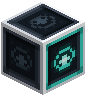

Attention Head

Multi-head causal self-attention in one machine: the attention you can build from Linear Layers, a Matrix Multiplier, a Causal Mask and a Softmax, with queries, keys and values all computed from its one input, a causal mask built in, several heads and an output projection.

Shapes
A sequence [B×T×C] in, the same shape out.
Settings
- Heads: 1, 2, 4 or 8. 4 by default. The width C must divide evenly by it. Each head works on C/H of the numbers and scales its scores by 1/√(C/H).
Parameters
4 × C²: the matrices W_Q, W_K, W_V and W_O, without biases.
In PyTorch
self.attn = CausalSelfAttention(C, heads=4)x = x + self.attn(self.norm1(x))
Notes
After training, its picture shows where its first head looks: one row per position, one column for every position it can see.
Making it
The Fabricator makes it from a photomask of Attention: verify the spec on a Bench, or find a salvaged mask in the ruins, which makes it unfused. See The Bench and the Fabricator.